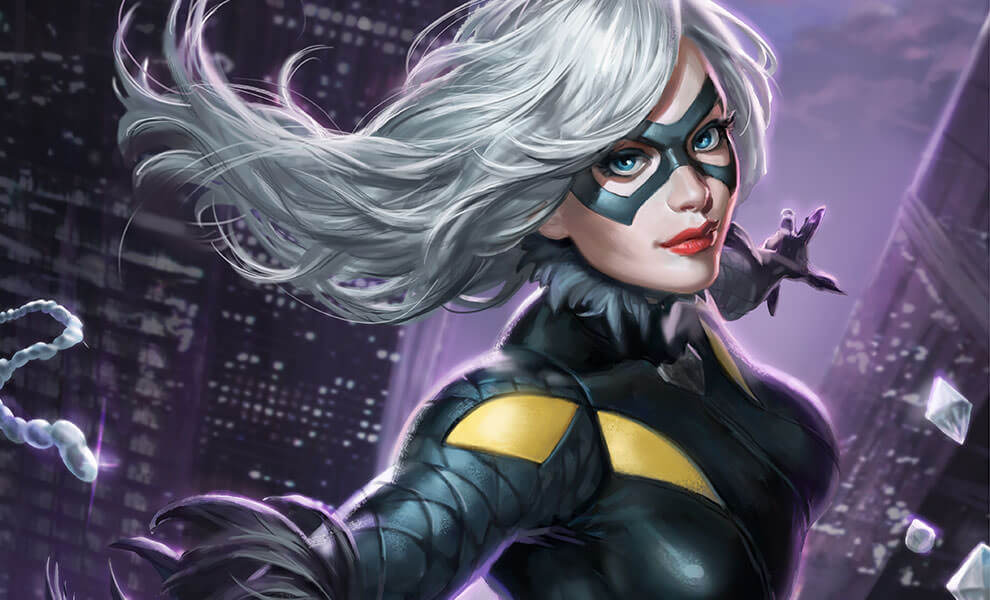

Black Cat
Felicia Hardy
Aliases
Felicity Harmon, Cat, "Licia", "Leesh", "Fee-Fee"
Identity
Known to authorities
Citizenship
U.S.A. with a criminal record (pardoned)
Place of Birth
Flushing, New York
Occupation
Private investigator, adventurer; former professional thief
Known Relatives
Walter Hardy (The Cat, father, deceased), Lydia Hardy (mother)
Group Affiliation
Formerly Owner of Cat's Eye Investigations, Heroes for Hire, former partner of Spider-Man
Education
College graduate (arts major)
Powers
Though it has been suggested that she had a latent mutant ability to affect probability fields around her ("jinxing"), the Black Cat's original "bad luck" powers were nothing more than meticulously planned stunts, executed with the aid of her exceptional gymnastics and unarmed combat skills. Later seeking power to enable her to be a true partner to her lover, Spider-Man, she made a secret deal with the Kingpin, whose scientists imbued her with a genuine "bad luck" power. This power enabled her subliminally and psionically to affect probability fields, causing improbable, but not impossible, "unlucky" events to occur to enemies within her line of sight. After Dr. Strange removed the jinx Spider-Man contracted, the Cat's powers mutated, leaving her absent the bad luck ability, but with infrared vision, superhumanbalance and agility, and long extensible claws. After exposure to the Chameleon's device from the Tinkerer, used to remove Spider-Man's powers, Felicia lost all her superhuman abilities as well. She has since relied upon the Tinkerer's high-tech inventions to support her feline antics. Black Cat's costume also contains micro-servos, which enhances her strength such that she is able to lift 800 lbs optimally. The Tinkerer has also provided her with metal mesh wired gloves with sensors to trigger extension of claws, agility-boosting implants and interaural balance compensators.
Abilities
An experienced gymnast and acrobat, can swing from rooftop to rooftop with help from a grappling hook, also an experienced hand-to-hand combatant
Weapons
The Black Cat has retractable claws hidden in her gloves.
Paraphernalia
The Black Cat carries a small grappling hook device, with a built-in release mechanism, enabling her to swing among buildings in a manner similar to Spider-Man and Daredevil, though with marginally less speed than either. She wears earrings of a unique design that aids her balance and allows her to always land on her feet. She wears contact lenses that enable her to see in the UV and IR range, providing excellent night vision.